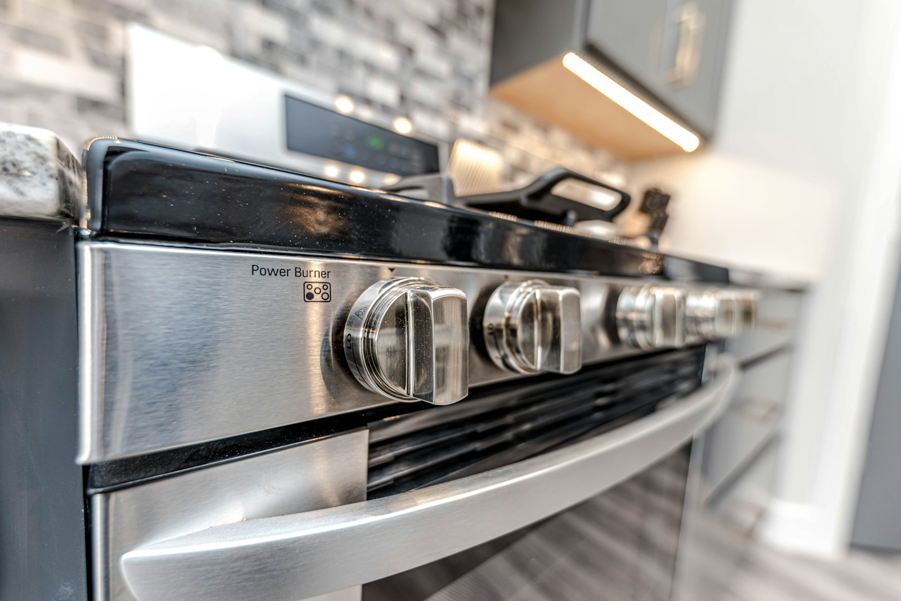
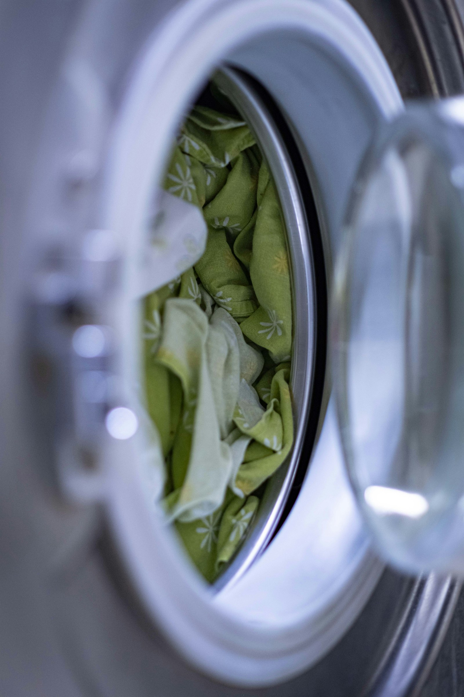
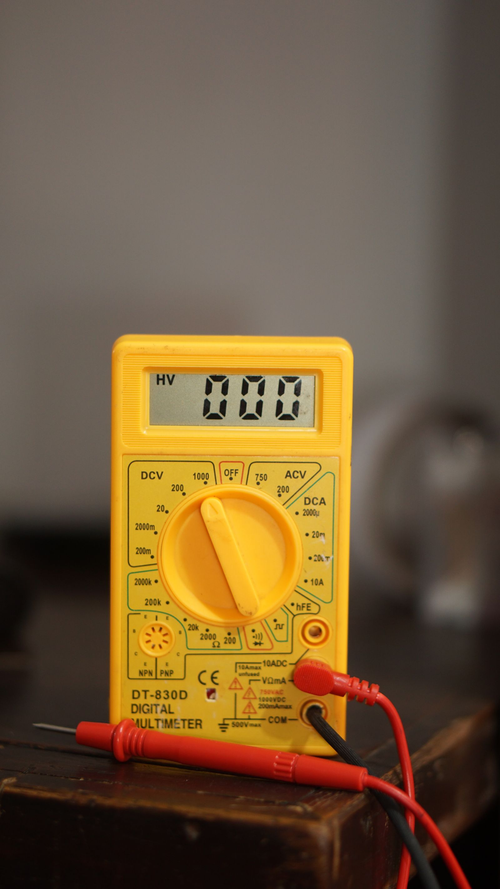

Ovens, cookers and hobs
Elements, thermostats, doors and controls. Including taking an old cooker out and putting the new one in properly.

South Ockendon, covering Essex and East London
Washing machines, tumble dryers, ovens and dishwashers, repaired since 1964. As the firm has put it for years: it is easier on the pocket to repair, not replace.
Rated 4.8 on Google
What customers write about most is turning up when they said, taking the old machine away, and not taking liberties on the price.
What we fix
Washing machines come up more than everything else put together. Dryers, ovens and dishwashers make up most of the rest.

Elements, thermostats, doors and controls. Including taking an old cooker out and putting the new one in properly.

A machine that will not start and a machine that will not drain are different jobs. Finding out which is the first thing that happens.
The name says Electrical Services for a reason. One customer's oven installation included running new power cables to feed it.
The bulk of the work, and the thing customers write about most. Bearings, pumps, drums, belts and the rest of it.
Not draining, not filling, not cleaning properly. Usually one of a small number of things.
Customers mention this more often than almost anything else. If the machine has to go, it goes, and it does not sit in your kitchen for a fortnight.
What will it cost?
No price list here, on purpose. Until somebody has looked at the machine, any figure would be a guess, and a guess printed on a website is worse than no figure at all. Ring and describe what it is doing.
Ring 07376 100637How it works
Most appliance repairs are attempted on your kitchen floor with whatever is in the van, and if the part is not there the job stops. That is the difference a workshop makes, and it is worth knowing before you ring anybody.
One
It gets stripped down and diagnosed where it stands, so you find out what is actually wrong with it.
Two
If it can be finished there, it is. If it needs the bench, it goes back to the workshop.
Three
It is repaired and serviced properly, with the right part rather than the one that happened to be in the van.
Four
It comes back and goes in. One customer had a dryer away and returned inside a day and a half.
Since 1964
This firm has been making the same argument since 1964, through several decades in which throwing the thing away got steadily easier and steadily more expensive.
A machine that needs a pump does not need replacing. And when one genuinely has come to the end, it gets taken away rather than left for you to deal with.
Areas
Based in South Ockendon and working across the Thurrock and Havering border. The list below is the firm's own coverage area as it has long described it.
And the surrounding areas. If you are not sure whether you are in reach, ring and ask.
Janco Domestic Electrical Services
6 Holly Drive
South Ockendon, Essex RM15 6TG
One number, and it is this one
Several old numbers for this firm are still floating around the online directories. 07376 100637 is the one that reaches the shop.
Questions
The make and model if you can find it, and what the machine is actually doing. Whether it makes a noise, whether it fills, whether it drains. That is usually enough to know what is coming.
Sometimes, and you should expect to be told so. A repair that costs most of a new machine is not a repair worth having, and pretending otherwise is how people lose trust in the trade.
Yes. It is one of the things customers mention most, presumably because so few people offer it.
Yes, including taking the old one out first. One oven installation on the record also involved running new power cables to it.
Weekdays from 9am. Ring for anything more specific rather than trusting a directory, because several of them carry details that are years out of date.